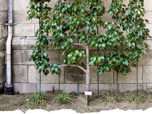

Hitotoki
New York Tales from Curious Borough Dwellers- Tokyo (en)
- Tokyo (ja)
- New York (ny)
- London
- Paris
- Shanghai
- Sofia
“Vibrating almost imperceptibly in the breeze like a woody tuning fork.”
The trip to the Cloisters[1] with my girlfriend Susan was my third trip. I have now been there a total of five times, but we have only gone together that once. Most of our visit that day was comparable to my other visits: Here again was the studied precision of the religious icons and illuminated manuscripts; here again I felt the serenity of the abbeys and the reconstituted chapels. Like anything brought brick-for-brick across the ocean, the Cloisters retains the feeling of being somewhere else, somewhere unnatural and magical. It is a place grafted onto its surroundings but somehow still living, even blossoming, as a result.
On this visit, though, I was moved to an intense degree by the sight of a pear tree. I had not noticed it before, tucked as it was against the shallow of a wall, nor have I felt so deeply for it since. Its invisibility was part of the point. The tree was an espalier, groomed to lie flat against the stone so as not to crowd the tiny castle garden.
The pear tree faced a patch designated for “magic plants.” These plants had names like “Lady’s Mantle,” “Mandrake” and “Scarlet Pimpernel,” names that hinted at stories told and repeated, and I suspected that at least some of the magic this harvest held could be found in allegory. I’d noticed them first, and photographed them, before the pear tree.
Facing it finally, I was overcome by the beauty of its order. There was careful symmetry to its wispy branches, bent into the traditional shape of a Palmetto Verrier[2], vibrating almost imperceptibly in the breeze like a woody tuning fork. I felt its gardener’s labor and love for a slight but strong tree[3]. This natural thing had been made to grow in a certain beautiful, ordered way. Its branches had been cut and split, grafted and repositioned, painfully sometimes, but still—on it grew. The tree reached skyward. In a few weeks its golden pears would be vibrant. I wondered who might eat them and if they would be sweet to the taste.
Far off past the low garden wall, the Hudson River shone in the sunlight. Kids played on blankets in the park below us. The pear tree cast the hard shadow of its silhouette. Susan adjusted her purple dress and smiled at me from across the garden. I remember looking at all of this before we headed off for dinner. 
referenced works
- The Cloisters is a monastery cobbled together from pieces of medieval French monasteries. The Metropolitan Museum's uptown medieval annex, it sits on a four-acre site overlooking the Hudson River. (Source: metmuseum.org) ↩
- A vertical form of espalier. ↩
- Espaliers are commonly more robust then their undomesticated brethren, and earlier to fruit. ↩
location information
- Name: the garden in the Cloisters
- Address: The Cloisters Gardens, The Metropolitan Museum of Art, 99 Margaret Corbin Drive, Fort Tryon Park, New York, NY 10040
- Time of story: afternoon
- Latitude: 40.864755
- Longitude: -73.931787
- Map: Google Maps
026 “'Can I taste your vanilla?'”
025 “I save my spit for the next block so they don't mistake a cold for an insult.”
024 “The cruise passed close, with laughter loud over the water...”
023 “His children came to him but his wife, bird-like and sad-looking, did not.”
022 “I've been shot twenty-seven times!”
021 “The entrance at the top of the stairs is locked, but another staircase leads to the basement.”
020 “Danny busted out a bottle of Brut 33 aftershave...”
019 “I clutch the rusting, peeling hulk of the globe and hang on tight.”
018 “The naked man’s hands only mimicked a fondling.”
017 “That's when I knew I wanted to live in New York: in the midst of those fragile bralets and bodysuits.”
016 “The guns, we tell the police later, were black like ice.”
015 “...my own talisman against the folly of my youth.”
014 “Y'all in a band'r somethin'?”
013 “Perhaps it was the lanky teenager with the bright red book-bag that made me think I saw Adam.”
012 “I remember flattening myself against the streaky windows of the PATH train like an insect.”
011 “I glanced up to see another shape hit the sand.”
010 “Vibrating almost imperceptibly in the breeze like a woody tuning fork.”
009 “Then the jazz stopped and the radio said the war had started in the Middle East. ”
008 “Shirtless Boris Yeltsin’s skin reddens as he reads a book.”
007 “Port Authority was there with open, non-judging arms.”
006 “His almost-loss was my almost- nonexistence.”
005 “On the cold hard floor of the orphanage, I sang, longing for the day that they would come and rescue me.”
004 “He was a lawyer, after all.”
003 “The parking lot gate was open, and we ran in with the skateboard.”
002 “We arrived on completely Russian streets, with Russian signs and a familiar rudeness.”
001 “...the hourly clicking of Oxfords and high heels across the parking lot.”

Write for Us!
We’re looking for short narratives describing pivotal moments of elation, confusion, absurdity, love or grief — or anything in between — inseparably tied to a specific place in Tokyo or New York.
New York City:
Or receive updates by email
Addresses only used for the occasional hitotoki mailing. Otherwise locked away in a secret vault in the phone booth at Crif Dogs.
A list of all available RSS feeds is on the about page
commentary